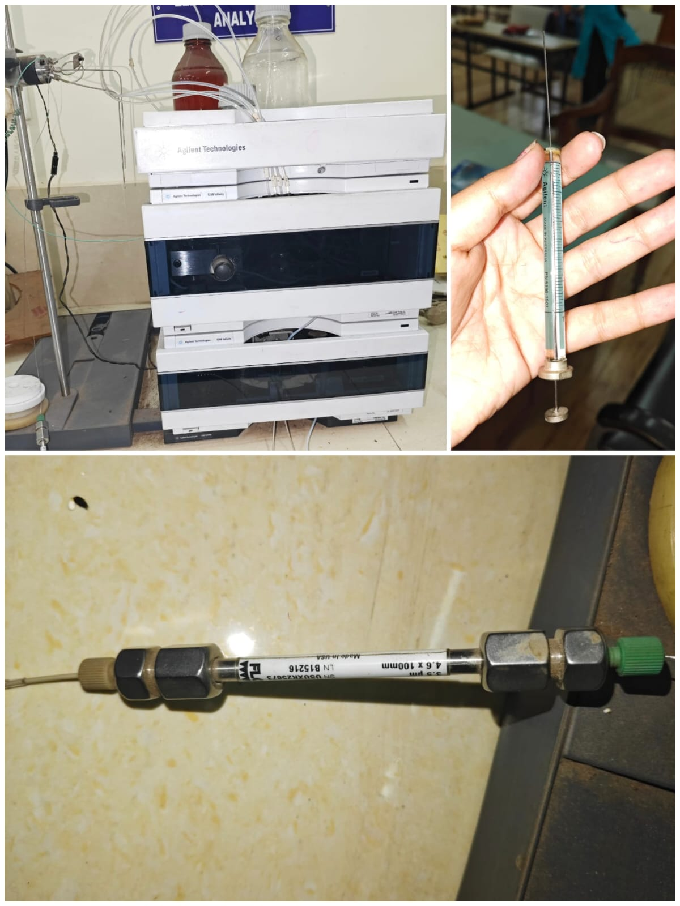
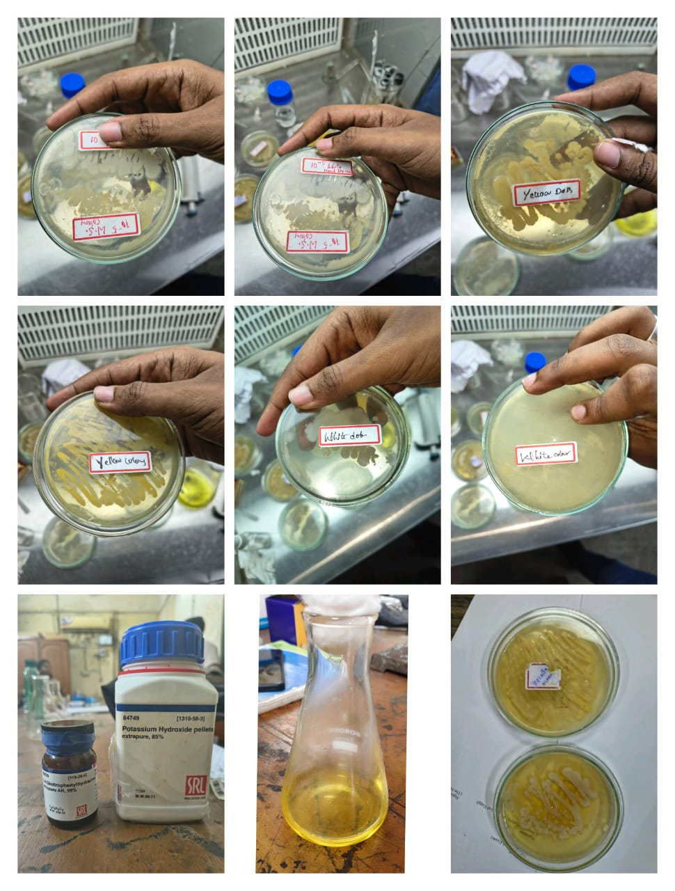
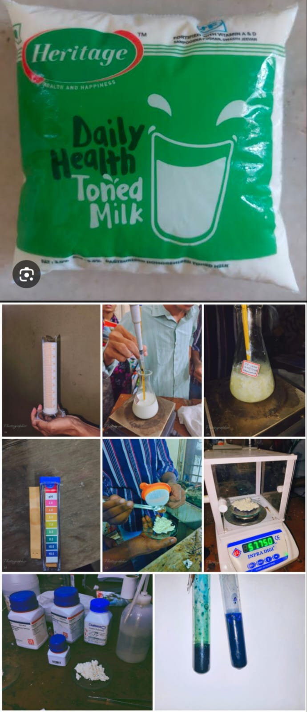
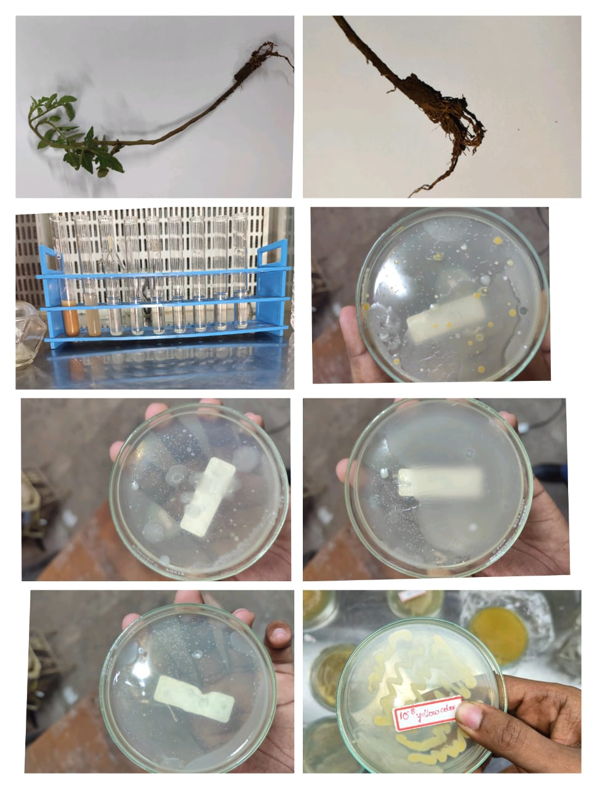
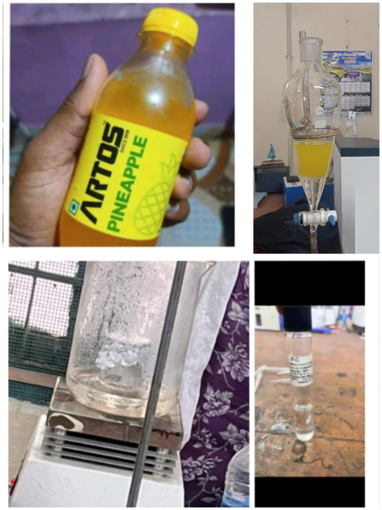

Biotechnology Laboratory
Coursework & Experimental Practicals
A dedicated repository documenting undergraduate biotechnology laboratory practicals, hands-on experimental procedures, instrumental setups, microbiology culture isolation, food protein assays, and observational records. All documented activities represent actual laboratory coursework and analytical practicals.
Laboratory Work
Overview of primary experimental modules executed during undergraduate biotechnology coursework.
Analytical Biotechnology & HPLC
CHROMATOGRAPHY & INSTRUMENTATIONHands-on training in liquid chromatography system assembly, micro-syringe injection procedures, and analytical column connection.
- Operation setup of Agilent Technologies HPLC modular system.
- Micro-syringe sample loading & injection valve handling.
- Installation of C18 reverse-phase column (4.6 × 100mm, 3.5µm).
Microbiology & Culture Isolation
ASEPTIC TECHNIQUES & MICROBIOLOGYAseptic benchwork under Laminar Air Flow hoods for bacterial colony isolation, serial dilution, and culture morphology observation.
- Serial dilution protocol up to 10⁻⁵ dilution factor.
- Streak plating and isolation of yellow and white colony variants.
- Chemical reagent preparation including 85% KOH pellet solution.
Food Biotechnology & Casein Assay
PROTEIN PRECIPITATION & GRAVIMETRYQuantitative and qualitative analysis of milk protein (casein) through isoelectric precipitation, filtration, and colorimetric confirmation.
- Isoelectric precipitation of casein from milk at pH ~4.5–4.6.
- INFRA DIGI precision analytical balance weighing (5.7750g yield).
- Colorimetric protein verification developing green/blue complexes.
Bioprocess Liquid-Liquid Extraction
SEPARATION & EVAPORATIONSolvent separation of target compounds from complex beverage matrices using separatory funnels and thermal evaporation setups.
- Biphasic solvent partitioning in glass separatory funnels.
- Heating mantle & magnetic stirrer temperature control.
- Concentrated organic extract recovery into sealed glass vials.
Experimental Activities Gallery
Actual laboratory photographs showcasing instruments, plate cultures, extraction glassware, and gravimetric observations.

Agilent HPLC System & Column Setup
High-Performance Liquid Chromatography equipment setup featuring sample injection micro-syringe loading and analytical reverse-phase column installation.

Aseptic Isolation & Culture Plating
Streak plate purification of bacterial isolates under aseptic conditions, exhibiting distinct colony morphology (yellow vs. white colonies) at 10⁻⁵ dilution.

Milk Casein Isoelectric Precipitation
Stepwise isolation of milk casein via acid-induced precipitation at its isoelectric point (~pH 4.6), followed by precision weighing (5.7750g) and colorimetric testing.

Separatory Funnel Solvent Extraction
Liquid-liquid biphasic extraction setup using a ring-stand mounted separatory funnel to partition target compounds from liquid matrices.

Plant Root Morphology & Rhizosphere Isolates
Morphological evaluation of plant root systems and serial dilution tube racks for rhizosphere microbial colony enumeration.

Biotechnology Coursework Practicals
Hands-on experimental observations, laboratory techniques, and documentation recorded across undergraduate biotechnology practicals.
Techniques & Practical Skills
Methodologies and lab equipment operations demonstrated across coursework practicals.
Analytical Methods
- HPLC Syringe Sample Inoculation
- C18 Column Installation & Fitting
- Separatory Funnel Partitioning
- Thermal Solvent Evaporation
Microbiological Techniques
- Laminar Flow Hood Aseptic Work
- Serial Dilutions (10⁻¹ to 10⁻⁵)
- Agar Streak Plate Purification
- Colony Morphology Characterization
Biochemical Assays
- Isoelectric Protein Precipitation
- pH Optimization & Strip Testing
- Gravimetric Mass Determination
- Qualitative Colorimetric Assays
Instrumentation & Equipment
- Agilent Technologies HPLC Stack
- INFRA DIGI Precision Balance
- Hotplate Magnetic Stirrers
- Volumetric Micropipetting
Plant & Botanical Work
- Root System Specimen Analysis
- Rhizosphere Sample Processing
- Microbial Soil Isolation
- Anatomical Record Keeping
Lab Safety & Quality
- Reagent Preparation (e.g. KOH 85%)
- Aseptic Glassware Autoclaving
- Chemical Hazard Handling
- Observational Log Documentation
Practical Documentation Logs
Summary records of practical procedures, parameters, and observed experimental values.
| Log ID | Practical Module | Key Parameters & Equipment | Primary Observation / Outcome |
|---|---|---|---|
| EXP-HPLC-01 | HPLC Analytical Setup | Agilent HPLC Unit, C18 Column (4.6 × 100mm, 3.5µm), Agilent Syringe | Successful fluidic coupling and sample micro-injection path verification. |
| EXP-MIC-02 | Bacterial Isolation & Streaking | Laminar Hood, Nutrient Agar, Serial Dilution (10⁻⁵ factor) | Isolated distinct yellow ("Yellow DB") & white colony morphologies. |
| EXP-BIO-03 | Casein Isoelectric Precipitation | Milk Sample, pH Indicator Paper, Hotplate Stirrer, Micropipette | Casein precipitation observed at isoelectric point pH ~4.5–4.6. |
| EXP-GRAV-04 | Casein Gravimetric Assay | INFRA DIGI Precision Balance, Watch Glass, Spatula | Measured casein mass yield of 5.7750g on precision balance. |
| EXP-EXT-05 | Liquid-Liquid Solvent Extraction | Separatory Funnel, Ring Stand, Heating Mantle, Liquid Sample Matrix | Biphasic solvent layer separation & concentrated extract vial collection. |
| EXP-PLT-06 | Plant Root & Rhizosphere Study | Plant Specimen Roots, Serial Dilution Rack, Petri Dishes | Root system branching documented & soil microflora plated. |